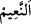
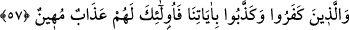
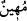

Ferman sâhibi, lâ-yezâl olan Allah’ın mülkü dışında
İbn Atâ der ki: “Mülk, bütün zamanlarda ve tüm hallerde Allah Teâlâ’ya âiddir. Fakat
Allah o gün Kahhâr ve Cebbâr olduğunu ibrâz etmek için mülkünü/hükümranlığını
avama gösterir. Hiç kimse gördüklerini inkâr edemez.”
“İnsanlar arasında hüküm verir.” Sanki “Allah, o zaman onlara ne yapar?” diye
sorulmuş ve cevab olarak şöyle buyrulmuştur: “Kur’an’a îmân edenlere ve Kur’an
hakkında mücâdeleye girişenlere yaptıklarının karşılığını vererek iki topluluk arasında
hükmeder.”
Sonra Allah bu hükmün ne olduğunu şöyle açıklamıştır: Kur’ân’a “îmân edip” onun
hakkında mücâdele etmeyenler, onun muhtevâsında emredilenlere imtisâlen “iyi
davranışlarda bulunanlar Naîm cennetlerinin içindedirler.” Orada yerleşmişlerdir.
Kâşifî der ki: “Onlar, zahmetsiz ve sıkıntısız naz ve nimet bahçelerindedirler.” Râğıb
da şöyle der: “
” çok nîmet demektir.
57. İnkâr edip âyetlerimizi yalanlayanlara gelince, işte onlar için alçaltıcı bir azap
vardır.
“İnkâr edip âyetlerimizi yalanlayanlara” yâni bunda ısrar eden ve buna devam
edenlere “gelince, işte onlar için alçaltıcı” hor kılan ve rüsvâ eden “bir azap vardır.”
Semerkandî der ki: “
” demek, onların izzetini ve kibirlerini baştan ve bütünüyle
gideren, onlara vasfedilemeyecek horluk ve zillet veren, demektir.”
el-İrşâd’da der ki: “
” azâbın sıfatıdır. Birincinin değil de ikincinin haberinin
başına “fâ”nın gelmesi, mü’minlerin mükâfât ve sevab elde etmelerinin sâlih amellerin
onu îcab ettirmesi olarak değil de lütuf yolu ile olduğuna, kâfirlerin cezalandırılmasının
ise kötü amelleri sebebiyle olduğuna tenbih içindir.”
Bilesin ki her ne kadar kâfirler Kur’an’dan ve onun haber verdiği öldükten sonra
diriltme ve yapılanların karşılığının verilmesinden şüphe içinde olsalar da âdil karar ve
hüküm verme mutlaka olacaktır.
Rivâyet edilir ki Lokman (a.s.) oğluna öğüt verdi ve şöyle dedi:
“Oğulcuğum eğer ölümden şüphen varsa kendinden uykuyu uzaklaştır. Buna gücün
yetmez. Tekrar diriltilmekten şüphen varsa, uyuduğunda kendinden uyanmayı uzaklaştır.
Buna da gücün yetmez. Sen bunları düşününce nefsinin başkasının elinde olduğunu
bilirsin. Çünkü uyku ölüm, uykudan uyanmak da öldükten sonra dirilme yerindedir.
Kul Mevlâsını tanıyınca O’nun emrini kabul eder. Bu sâyede de asla sona ermeyen bir